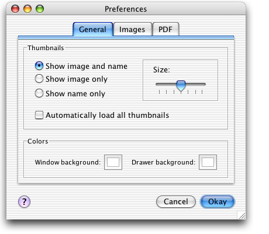
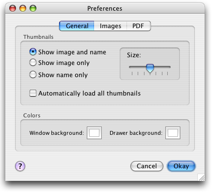
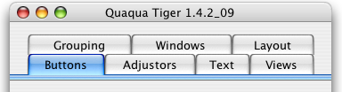
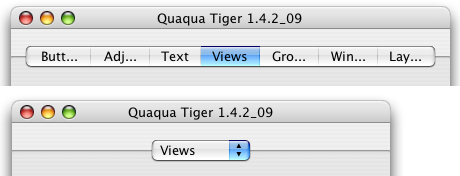
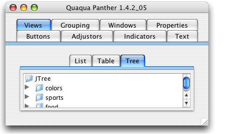
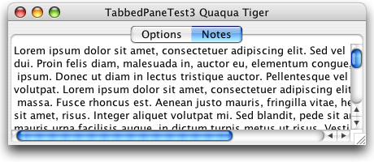

Property |
Type | Notes |
|---|---|---|
|
java.lang.String |
Values: "regular", "small" |
Quaqua.TabbedPane |
java.lang.Boolean |
Set this to false to hide the content border. |
Quaqua.TabbedPane |
java.lang.Boolean |
Set this to false to prevent tabs from being shortened. |
Quaqua.TabbedPaneChild |
java.awt.Color |
To be set on a child of a JTabbedPane |
Quaqua.TabbedPaneChild |
java.awt.Insets |
To be set on a child of a JTabbedPane |
Quaqua.Component.visualMargin |
java.awt.Insets |
See layout |
The Quaqua Look and Feel supports tabbed panes with the "wrap" tab layout policy and the "scroll" tab layout policy.
Tabbed panes with "wrap" layout policy work best, when used in conjuction with the Jaguar design, as used by Mac OS X 10.2 and earlier versions:

Tabbed panes with "scroll" layout policy work best, when used with the Panther and Tiger designs as used by Mac OS X 10.3 and later versions:

The default layout policy is determined at
startup. For the Jaguar design, the default layout policy is "wrap",
for other designs, the default layout policy is "scroll". You can
explicitly specific the default layout policy by setting the system property Quaqua.tabLayoutPolicy to wrap or
to scroll. If you want Quaqua to determine the design automatically,
dont' set this property, or specify the value auto.
|
The following screenshots show what happens when the tabs don't fit into a single run. The "wrap" layout policy stacks the tabs into multiple runs. The "scroll" layout policy first attempts to shorten the width of the tabs. If shortening is not possible, the tabs are put into a JComboBox.


Set the client property "Quaqua.TabbedPane.shortenTabs" to Boolean.false to prevent shortening. In this case, the tabs are either displayed fully or collapsed into a JComboBox. Shortening still happens for vertical tab runs.
JTabbedPane tp = new JTabbedPane(); tp.setLayoutPolicy(JTabbedPane.SCROLL_TAB_LAYOUT); tp.putClientProperty( "Quaqua.TabbedPane.shortenTabs", Boolean.FALSE ); |
Quaqua's Jaguar tabbed panes supports regular and small sized tabbed panes. To get the small size style, set the font to Lucida Grande 11. The regular size style uses the font Lucida Grande 13.
JTabbedPane tp = new JTabbedPane(); tp.setFont( new Font("Lucida Grande", Font.PLAIN, 11) ); |
The image below shows an outer tabbed pane that goes to the edges of the JFrame and an inner tabbed pane that does not do so.

To achive an edge to edge style, set the Quaqua.Component.visualMargin property to negative values, until the border of the tabbed pane disappears
on the right, left and bottom edge.
JTabbedPane tp = new JTabbedPane(); tp.putClientProperty( "Quaqua.Component.visualMargin", new Insets(3,-3,-4,-3) ); |
The client property Quaqua.TabbedPane.contentBorderPainted can be used to switch the content border off.
JTabbedPane tp = new JTabbedPane(); tp.putClientProperty( "Quaqua.TabbedPane.contentBorderPainted", Boolean.FALSE ); |
The insets and the background color of the content
area of a JTabbedPane can be changed by specifiying the following client
properties on the children of a JTabbedPane: Quaqua.TabbedPaneChild.contentInsets,
Quaqua.TabbedPaneChild.contentBackground.
JTabbedPane tp = new JTabbedPane(); JScrollPane child = new JScrollPane(); child.setBorder(new EmptyBorder(0,0,0,0)); child.putClientProperty( "Quaqua.TabbedPaneChild.contentInsets", new Insets(0,0,0,0) ); child.putClientProperty( "Quaqua.TabbedPaneChild.contentBackground", Color.white ); tp.addTab("Notes", child); |
The TabbedPaneChild properties are especially useful for placing a JScrollPane into a JTabbedPane with "scroll" tab layout policy.
Here is a sample usage of the code snippet above:
